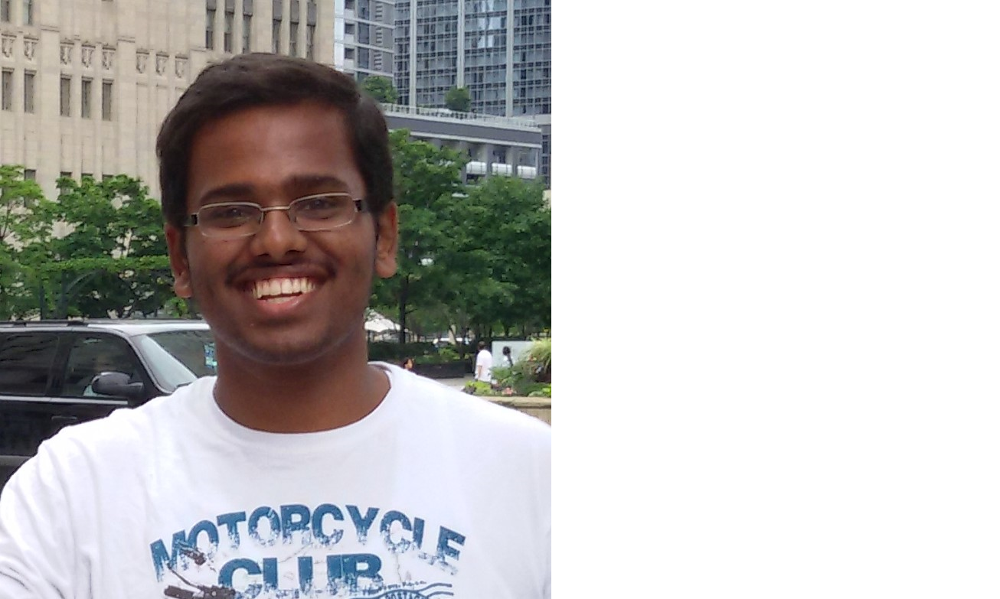

About Me
Hi There! I am Shara Rhagha Wardhan B. I am currently in my final year of integrated
B.Tech and M.Tech in Mechanical Engineering. I am also the current President of
Toastmasters Club- IITM Chapter, a branch of Toastmasters International.
Research Interests
| Model Predictive Control |
Wavelet Domain Control |
Optimal Control |
| System Identification |
Optimization |
Non Linear Systems |

Current Activities
- My Masters Thesis Project (June 2015 - May 2016)
Control of Machining Instability of the Cylindrical Grinding Machine
Guided By
Prof. Arun K. Tangirala, Department of Chemical Engineering, IIT Madras
Prof. N. Ramesh Babu, Department of Mechanical Engineering, IIT Madras
- President of Toastmasters Club - IITM Chapter (Jan 2016 - July 2016)
Toastmasters International is a world leader in communication and leadership development
Our Club comes under District 82 Division I Area I4 subpart of Toastmasters International
The aim is to provide a supportive and positive learning experience in which members are empowered to develop
communication and leadership skills, resulting in greater self-confidence and personal growth
Past Activities
- Summer Research Internship (May 2014 - June 2014)
Development of Weight Loss Control System
Guided By
Prof. Benjamin Terry, Department of Mechanical Engineering, University of Nebraska, Lincoln, USA
- Vice President Education of Toastmasters Club - IITM Chapter (June 2015 - Dec 2015)
Toastmasters International is a world leader in communication and leadership development
Our Club comes under District 82 Division I Area I4 subpart of Toastmasters International
The VP-E is 2nd ranking club officer. As VP-E of my club, I am responsible for planning successful
club meetings which provide each member the opportunity to achieve his or her educational goals.
Specific duties include:
* Scheduling the weekly meeting agenda.
* Finding out and monitoring each member's needs and schedules their goals accordingly.
* Signing member's manuals, updating member progress charts and reporting educational program completion to World Headquarters.
* Coordinating with each week's Toastmaster of the day and providing the necessary information such as who has an assigned duty, providing email addresses for the people with upcoming duties, and giving the future Toastmaster a sample agenda to follow.
* Ensuring that a new member receives orientation to Club procedures and the Toastmasters educational programme and is assigned a Mentor if desired.
* In the absence of the President, the VPE presides at Club and Committee meetings.
* Attending autumn and/or spring conference to vote on District issues. Arranges a proxy if unable to attend.